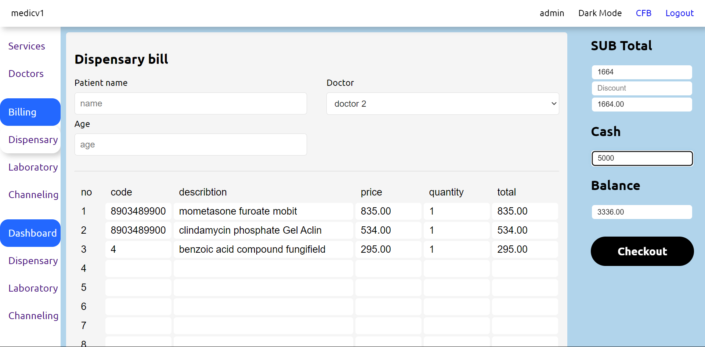

Business Portfolio
Last updated: May 12, 2024
Please note: The portfolio consists of completed projects, some of which are under development in several phases over a long period. We have also included partial representations of such projects. especially about that type of projects, we are not allowed to publish all the details. So hadn't mentioned some strategies, charts, diagrams, screenshots, key points, and ideas because of the client's perspective.
Dando (Pvt) LDT
Project: ERP + Multiple POS + E-Commerce Platform
Project Overview
Our latest project showcases the seamless integration of an advanced e-commerce platform with Enterprise Resource Planning (ERP) and Point of Sale (POS) systems. This robust solution is designed to enhance the efficiency and operational capabilities of various business sectors, including wholesale and retail shops, delivery vehicles, smart billing, and garment manufacturing.
Key Features
- ERP Integration: Comprehensive ERP modules to manage resources efficiently across different departments.
- POS Integration: State-of-the-art POS systems that streamline the sales process, ensuring a smooth customer experience both online and offline.
- Sector-Specific Solutions: Not allowed to mention.
POS
Billing Page Overview
The billing page is a crucial component of our integrated e-commerce platform, designed to facilitate efficient and accurate transaction processing. This page provides a streamlined interface for handling sales, managing orders, and ensuring a smooth checkout experience for both customers and sales staff.
Key Features
- Item List and Details:
- No: Serial number of the item in the list.
- Code: Unique identifier for each product.
- Description: Brief description of the item.
- Unit Price: Price per unit of the item.
- Discount: Applicable discount on the item.
- Quantity (qty): Number of units purchased.
- Subtotal: Calculated total price for each item, factoring in the quantity and any discounts.
- Salesman: Identifier for the salesperson handling the transaction.
- Subtotal and Discounts: The right side of the interface highlights the subtotal for all items, along with fields for any additional discounts or rounding adjustments, providing a clear view of the total amount before checkout.
- Cash and Balance Calculation: The page allows for the entry of the cash amount provided by the customer. It then automatically calculates and displays the balance to be returned, ensuring accuracy in cash handling.
- Checkout Process: A prominent "Checkout" button at the bottom right facilitates the completion of the transaction once all details are verified.
- Additional Functionalities:
- Reprint: Option to reprint the bill if needed.
- Holded Bills: A section to manage bills that have been put on hold.
- Disable Offers: Checkbox to disable any active offers during the transaction.
- Cashier Shift Management: Option for managing cashier shifts, ensuring smooth transitions between staff.
- Customer Information: A field at the bottom allows for the input of customer details, such as name and phone number, enhancing record-keeping and personalized service.
Receipt
Each receipt includes comprehensive transaction details and is identified with a unique barcode, making it easy to track and manage purchases. This facilitates efficient return and exchange processes, enhancing both customer satisfaction and operational efficiency.
Dashboard
The dashboard's overall analysis section provides a comprehensive visual representation of key financial metrics, including total sales and profits over selected time periods. Users can switch between different time frames, such as monthly, to monitor performance trends and make informed business decisions. The graph clearly distinguishes between sales and profits, offering an at-a-glance understanding of financial health. Additional functionalities such as salesman comparison, order history, and stock movement tracking enhance the dashboard's utility, making it a central hub for critical business insights.
Stock Analysis
Our stock analysis page provides a comprehensive view of inventory performance and trends. It features real-time updates on stock levels, sales trends, and inventory turnover rates, empowering businesses to make informed decisions. Through intuitive graphs and charts, users can track stock movements, identify top-selling items, and manage reordering efficiently. This analysis helps optimize inventory management, minimize stockouts, and maximize profitability, ensuring businesses stay agile and responsive to market demands.

Three Types GRN pannels
This project involved the design and implementation of the GRN (Goods Received Note) and Insert Page functionalities for a Point-of-Sale (POS) system. The system features three advanced panels (Adv1, Adv2, Adv3) that enhance usability and functionality. The GRN functionality allows seamless recording and tracking of received goods, ensuring accurate inventory management. The Insert Page functionality enables efficient data entry and retrieval, optimizing user experience and system performance.
Stock Movement Analysis With AI
The Stock Movement Analysis Page helps business owners and managers make informed decisions about inventory management, ensuring optimal stock levels to meet customer demand while minimizing excess stock.
E-commerce Platform
This project integrates an ERP system with an e-commerce platform to streamline business operations and enhance efficiency. The key feature is the automatic synchronization of stock levels between the ERP system and the online store, ensuring real-time inventory management.
Please note: We are not allowed to publish more details of this platform because of it has not officially publish yet by the client.
New Medical Polgolla
Project: Billing system for pharmercy
The Pharmacy Billing System is an advanced, user-friendly application designed to streamline the billing process in a pharmacy. This system automates various tasks such as generating bills, managing inventory, tracking sales, and maintaining customer records. It features an intuitive interface that allows pharmacists to quickly input data, scan barcodes for fast product entry, and process payments efficiently. The system also includes comprehensive reporting tools, providing detailed insights into sales trends, stock levels, and financial performance. By integrating real-time updates and secure data management, the Pharmacy Billing System enhances operational efficiency and ensures accurate, hassle-free billing for both the pharmacy staff and customers.
The Pharmacy Billing System Dashboard is an intuitive interface designed to optimize pharmacy management. It features a comprehensive Sales Report for tracking daily, weekly, and monthly performance, a Close to Expire List to manage medications nearing expiration, and an Out of Stock List to monitor inventory levels and prevent stockouts. This dashboard ensures efficient operations, informed decision-making, and enhanced customer satisfaction.
Malsiripura Channelling Center
Project: System for Channelling center + mini pharmercy
The Medical Channeling Center System is a comprehensive software solution designed to streamline and enhance the process of managing patient appointments and medical consultations. This system integrates various functionalities to ensure efficient scheduling, patient management, and communication between healthcare providers and patients.
Key Features
- Appointment Scheduling
- Easy-to-use interface for booking and managing patient appointments.
- Real-time availability updates for doctors and medical staff.
- Automated reminders and notifications for upcoming appointments.
- Patient Management
- Secure storage and access to patient records and medical histories.
- Detailed patient profiles with personal, medical, and insurance information.
- Efficient handling of patient check-ins and check-outs.
- Doctor and Staff Management
- Comprehensive profiles for doctors and medical staff, including specialization and availability.
- Tools for managing staff schedules and shifts.
- Performance tracking and reporting for medical personnel.
- Communication Tools
- Secure messaging system for patient-doctor communication.
- Integration with email and SMS for appointment reminders and notifications.
- Telemedicine support for remote consultations.
- Billing and Payments
- Streamlined billing process with automated invoice generation.
- Multiple payment options and integration with payment gateways.
- Insurance claim management and processing.
- Reporting and Analytics
- Customizable reports on patient flow, appointment trends, and financial metrics.
- Data analytics for improving operational efficiency and patient care.
- Compliance with healthcare regulations and standards.
- User-friendly Interface
- Intuitive and responsive design for easy navigation.
- Multi-device compatibility (desktop, tablet, and mobile).
Salt and Pepper
Project: KOT for Restaurent
The Kitchen Order Ticket (KOT) system is an essential component of modern restaurant operations, designed to streamline the process of managing and tracking customer orders from the front of the house to the kitchen. This project involves the development of a comprehensive KOT system tailored to improve efficiency, accuracy, and communication within a restaurant setting.
Key Features:
- Order Management: Efficiently captures and organizes customer orders, sending them directly to the kitchen in real-time.
- Customization: Allows for modifications and special requests on orders, ensuring customer preferences are accurately communicated.
- Status Tracking: Provides real-time updates on the status of each order, from preparation to delivery, helping waitstaff manage their tables effectively.
- Printer Integration: Supports integration with kitchen printers for automatic printing of order tickets, reducing the chances of missed or forgotten orders.
- User-Friendly Interface: Intuitive design for both front-of-house staff and kitchen staff, minimizing training time and maximizing productivity.
- Reporting: Generates detailed reports on order patterns, peak times, and kitchen performance, aiding in better resource management and planning.
This KOT system aims to enhance the overall dining experience by ensuring prompt and precise service, reducing wait times, and improving operational efficiency.